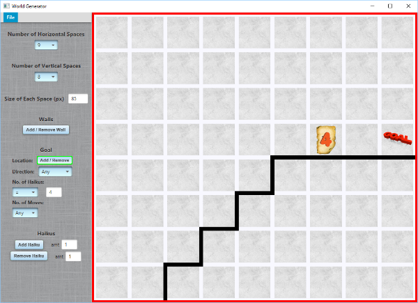

How to Use DigipuffLearnsJavaDigipuffLearnsJava is an environment in which you will learn, not only how to program Digipuff to accomplish challenges, but also how to modify the environment itself using Java.
Setup for IntelliJ IDEA:Create a new project (type: Java, Project SDK: 1.8) Click File, New, Project, Next, Next, Give your project a name, change the file location if desired, then click Finish. In the left-hand Project directory tree, click the name of your new project and you should see a directory called "src". Right click on "src" and choose New then Package. Give your package a name. It can be the same as your project name, or something different if you wish. Think of it just like a folder on your computer that organizes the stuff inside. Place DigipuffLearnsJava.jar (included with all Digipuff assignments) in your root project directory (the one at the very top in bold). You can download it to that location or copy and paste within IntelliJ. Once the DigipuffLearnsJava.jar file is in your root project directory, right click DigipuffLearnsJava.jar and select Add as Library...,then click OK. Right click your root project directory, then click New, then Directory. Type "worlds" (without the quotes), then click OK. Right click the worlds folder you just made and select Mark Directory As, then Resources Root. (NOTE: any world files you use for your Digipuff program must be in this directory) You are now ready to program!
Creating a Digipuff Program:Right click on your package folder and select New then Java Class. Give your program a name, such as "MyFirstDigipuffProgram" or "Assignment01". Just make sure it begins with a capital letter. Then click OK. You will now see the start of your new program. First, under the package declaration and just above the line "public class ...," type: "import DigipuffLearnsJava.*;" Next, on the line that starts with "public class ...," just after your program's name, but before the opening curly brace, type: "extends Main". So your program should now look something like this: package myPkg; Next we are going to write the two methods that make up a basic Digipuff program. The first tells the program which world file you want to use. Inside the curly braces, type: @Override Note that all world files end in ".world" and the first part is whatever you named it when you created it. So our program now looks something like this: package myPkg; Next, we are going to write the method that creates Digipuff, adds her to the world, and then tells her where to go and what to do. Underneath the getWorldUrl() method, type: @Override Inside this method, our first statement will be to create Digipuff: Digipuff dp = new Digipuff("My Digipuff", 0, 0, Dir.EAST, 0);
This creates a new Digipuff which we will command using the reference "dp". Her name in the world will be "My Digipuff", she will begin at the coordinate (0, 0), facing East, and having 0 haikus. Next, we need to add Digipuff to the world. We do that by calling: dp.spawn(); This tells Digipuff to spawn herself in the world. Finally, we are ready to give Digipuff some commands. We'll start with 3 easy ones: dp.move(); So our program should now look something like this: package myPkg; Now you are ready! To run your program, right click your program tab and select Run (the green triangle that looks like a play symbol).
Creating Custom Worlds for Digipuff (optional):From outside IntelliJ: Run WorldGenerator.jar From inside IntelliJ: Click Run then Edit Configurations. Click the green Plus sign at the top left and select Application. In the Name: field at the top, type "WorldGenerator". In the Main class: field, type "DigipuffLearnsJava.WorldGenerator". Make sure JRE: is 1.8, then click OK. You should now see WorldGenerator as an option in the Run menu, as well as in the toolbar. Note: You will need to save your world files in the "worlds" directory. (See the Setup for IntelliJ IDEA section) |